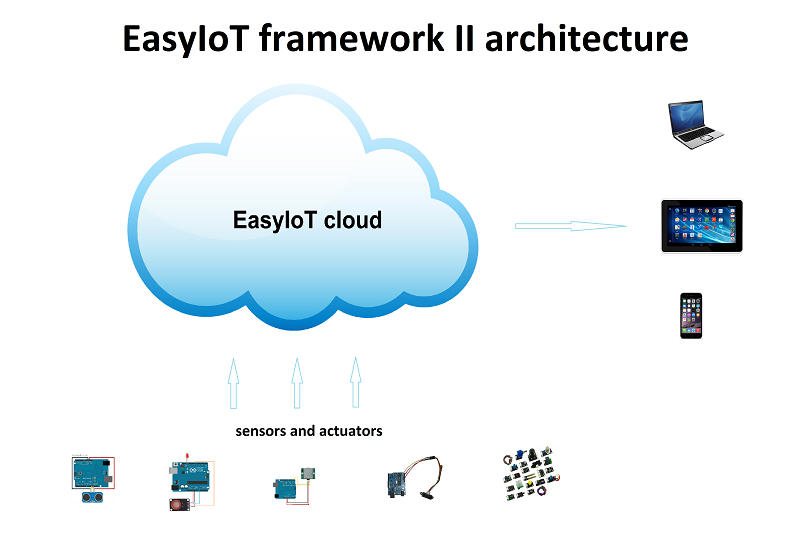
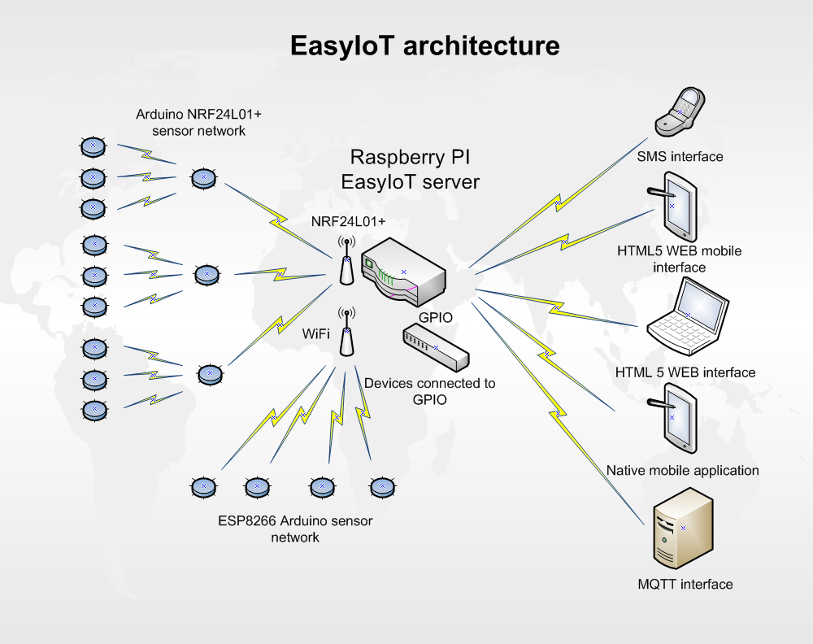

Plateformes, services Web et serveurs¶
9 meilleurs sites¶
Selon le site How2Shout H2S 9 Best & Top Open source IoT Platforms To Develop the IOT Projects 1
Kaa IoT Platform 2 It is the feature-rich open and efficient Internet of Things cloud platform
SiteWhere
ThinkSpeak (Matlab)
DeviceHive
Zetta
DSA
Thingboard
WSo2
IoTGo
Services WEB¶
Easy IoT¶
Fourni par iotlab7.com, basés en Slovénie. Le programme est co-financer par l’Union Européenne (Est-ce bien ou pas ?)
C’est une plateform de service mais que l’on peut installer localement.
You can try our EasyIoT Cloud (no local server is needed) or you can download EasyIoT server for local installation.
EasyIoT Cloud is available at http://cloud.iot-playground.com. No local server is needed, just connect your sensor(s) to our Cloud. In testing period service is free of charge. We also plant to keep it free for small scale projects.
Les exemples sur le blog montre des script qui ont l’aire terriblement plus compliqués qu’avec Cayenne !!!!
Oui pas si sûr. L’exemple que j’ai vu était compliqué mais c’est du MQTT pur et dur avec topic et tout y canti. Je révise mon propos : voir l’exemple de la MQTT lib esp8266-mqtt-easyiot-cloud-library 3
Appréciable, il y a un librairie pour ESP8266 4 pour l’environnement ARDUINO, la lib en elle-même se nomme esp-mqtt
Le serveur se monte sur un RPi, c’est l’Archi 1,
L’archi 2 s’oriente vers le cloud
Les archi sont bien expliquées (figures) sur la home page d’EasyIot 5.
 {kind=link}
{kind=link}
EasyIoT server is for local installation only. It is not the same product as EasyIoT Cloud, so protocols, sensors tutorials and phone app. is not compatible with EasyIoT Cloud solution.
Il y a un store (sur ebay et aliExpress) sur lequel on trouve tout un tas de cosntituants mais leur véritable offre commerciale ne se trouve pas là !
Il y a en tout 6 offres d’hébergement cloud 6 de free à Entreprise dont les prix vont de gratuit à plus de 360€/mois.
offre free:
4 modules
100k write /mounths
Calculs
1 mois c'est 2 592 000s ou 43200 mn
20k pour 5 grandeurs à tracer ( 100 / 5 = 20 )
Soit 666.7/jour ou 27.7/heure ou pour finir 1 écriture/129.6s
Avec un écriture / 15 minutes on serait large
il me reste jusqu'au 31/07/2018
78341 écritures
si on dit pour 5 capteurs ça donnerait 15668 wr/capteur
21j*24h*3600s = 1 814 400s
30emails/mounths
Offre individual:
12$/mois
10modules
500k wites/mounths
dl l’install RPI dans objetsConnectes
Il y a certes beaucoup d’exemples bien documentés mais il manque cruellement de documentation surtout au niveau du cloud
ESP/ARDUINO support
database IotServer access : SQLite in the root of the project and its called EasyIoTDatabase.sqlite Source : Easyiot forum 7
25/12/2019: lre forum n’a pas eu un seul ost depuis plus de 6 mois :-(
Une question importante posée sur le forum : Is that project is still maintained? depuis plus de 2 ans n’a pas reçu de réponse.
https://iot-playground.com/forum/beta-release/952-is-that-project-is-still-maintained
Thinger.io¶
Site officiel : https://thinger.io/ 8
Open Source
Cloud plateform
Easy Coding
Turning on a light from the Internet or reading a sensor value requires a
single line of code on the MCU. But that’s not all.
For Makers
Makers can register for free accounts to start building their IoT projects
in minutes, just using our cloud infrastructure.
Free offer (je ne l'ai pas retrouvé ! 25/12/2019)
Up to 2 Devices
Up to 4 Dashboards
Up to 4 Endpoints
Up to 4 Buckets
Standard bucket write rate (1/60s)
ie 4*24*30*60 = 172800 e/mois
Standard Endpoint calls rate (1/10s)
Up to 1 Year Data Retention
Shared Thinger.io Cloud
Community Support
L’offre commence à 29€/mois (offre maker !)
Samsung IoT ARTIK Cloud for IoT¶
Samsung ARTIK Cloud is an open data exchange platform designed to connect all devices.
using multiple protocols, including REST/HTTP, websockets, MQTT, and CoAP.
Pricing
une offre free sans limite de durée
100k messages/mois
1 mois de data rétention
une soixantaine de projets sur Hackster.io
exemple de projet ARDUINO
Adafruit IO¶
simple 2 offres
free
30 data point/mn
1 mesures toutes les 2 s
30jours de donnée
5 feeds limit
10$/mois
60data points/mn
60j
unlimited feeds
login reçu
Essai à faire
ESP/ARDUINO support
My Device.com / Cayenne¶
détecté le 25/09/17 tuto
ça a l'air très simple d'utilisation !
Produit Cayenne
The world's first drag-and-drop IoT project builder
Licensing and Authorizing Service: By using the Service and granting myDevices access to your Device(s), you hereby grant us a worldwide, perpetual, royalty-free license to use, reproduce, display the information in connection with the projects you’ve created by using the Services, in accordance with our Privacy Policy.
il est bon de la noter
pas de tarif annoncé clairement et simplement sur le site
Api MQTT
une lib à mettre dans l'interface ARDUINO
France Location
91 Boulevard National La Garenne Colombes Cedex, France
il y a une autre location aux US
Pas de pricing pour le moment. Lst info
J'ai créer un compte pour voir
cf keepass
Cayenne
The world’s first drag-and-drop IoT project builder
Quickly design, prototype, and commercialize IoT solutions
Feature on their web site
Customizable Dashboard
Remote Monitoring and Control
Alerts
Triggers
Scheduling
Schedule events for connected single board computers, microcontrollers, sensors and actuato
Visualization
Access real-time and historical device and sensor data
Utilisation
les exemples permettent d'arrivé rapidement à une solution
Mais l'ensemble des fonctions n'est pas décrit
C'est confu, il y a presque trop de lib
Explications
Cayenne Arduino est leur lib historique
Puis ils sont passé à MQTT (jugé plus stable et plus fault tolerant)
ils fournissent une méthode pour convertir les sketch
Ensuite, ils fournissent autant de lib que de chaines principales existantes
C'est bien expliqué ici
Sous github
Cayenne Arduino Library
une explication ici
Cayenne-MQTT-Arduino
Cayenne MQTT ESP Library
MQTT Libraries
MQTT.fx
appli our réaliser des connexion manuelles (pour tester)
CayenneArduinoMQTTClient.h
permet d'voir une idée de la liste des méthode de la class CayenneArduinoMQTTClient
Au final l'objet pré-instancier se nomme Cayenne.
Malheureusement pas de doc de reference de leur lib nul part !
même sur le forum, ils disent qu'il faut analyser le code !
Overview of the Cayenne-MQTT-Esp8266.h commands
Bon ben Arduino lib map !
ESP/ARDUINO support
Blynk¶
Blynk is a Platform with iOS and Android apps to control Arduino, Raspberry Pi and the likes over the Internet.
It's a digital dashboard where you can build a graphic interface for your project by simply dragging and dropping widgets.
Permet de réaliser rapidement des appli Android par glissé/déposé
Clouded ou local server
open source
pour moi c'est seulement le server qui est OS
annoncé pour tourné sur RPi
Il faut obtenir une authentification token
J'ai essayé mais ça bloque au taf
Plus de 400 cartes supportées dont l'ESP8266 et 32 of course
Particle Cloud¶
San Francisco. Adresse difficile à trouvée pas sur leur site. Fondée en 2011
vraiment dédié IoT
Particle is a prototype-to-production platform
C'est une plateform
all-in one
Cloud connected hardware developments kits
3 carte electroniques
WIFI
Photon
19$
Argon
GSM
Electron
69$
STM32 ARM CORTEX M3
+3$/mois 3 mois offerts
MESH
Argon
ESP32
sept 2018 à 15$
Boron
LTE-CATM1
Xenon
Devices dédié apparament et pas d’autre. Les prix des différents outils font un peu peur.
Des outils de dev on line ou pas. Ce qui est sur c’est qu’ils ont des développeurs WEB !
Pas Arduinio, 2 plateformes de dev differente (photon et Argon différentes !) Chiant alors que c’est du C++ et qu’ils ont du void setup() et void loop() !!!!
Particle Dev cannot be used to program 3rd-generation devices (Argon, Boron, and Xenon).
You should instead use Particle Workbench powered by VS Code.
Micorsoft Azure¶
Bcp trop complexe de s'y retrouver dans leur offres
start free
creat free account
ensemble de services
Virtual machines
App services
SQL database
Storage
Cloud services
Document DB
Active dir
Backup
y en a 58 comme ça
Chez eux, ils appellent ça des produits
Qui dit produit dit consommateurs...
Classés en 13 thèmes
Compute
Mise en réseau
Stockage
Web et mobilité
Conteneurs
...
Internet des objects
IoT hub
Azure IoT Hub
Connect, monitor, and manage millions of IoT assets
Use standard and custom protocols, including HTTP, Advanced Message Queuing Protocol (AMQP), and MQ Telemetry Transport (MQTT)
Il y a 4 offre dont une gratuite
Compté en nombre de message/jour
Frree 8Kmess/jour de 0.5kB et 500 devices identity
IoT Central pricing
Trial Application
Maximum of 10 devices
Valid for up to 30 days
Je m'y suis perdu
Rien que pour les IoT il y a une multitude d'appli avec des noms...
AWS¶
Amazon Alexa
Alexa est un assistant personnel intelligent
rendu populaire par Echo
Il est capable d'interaction vocale
Alexa peut également contrôler plusieurs appareils intelligents en faisant office de hub domotique
Amazone Web Service
Répartis en 12 group
Compute
Storage
IoT
Database
Managment
Security and identity
Accessing the AWS APIs requires valid access keys
Support Python, Android, Nodejs, PHP...
You choose
Boto is the Amazon Web Services (AWS) SDK for Python
Tout les services sont payant
https://aws.amazon.com/fr/pricing/services/
Des gratuité pendant 12 mois
avec certaines contraintes
Google Cloud for IoT¶
très pro
Pricing ?
support Mongoose OS
cf ci-dessou
supporté par adafruit
Me semble un peu lour à utilisé par rapport à Cayenne
ESP/ARDUINO support
OVH cloud iot¶
Site officiel : https://www.ovh.com/world/iot/ 9
25/12/2019: visiblement abandonné le lien rdirige automatiquement vers l’offre cloud standard
compatible Grafana
mais on peut se faire son propre dashboard
2$/mois
100k requet
1M message
visiblement pas prêt
le bouton discover ne fonctionne pas
le lien en bas de pache sur discover all doc pointe sur toute la doc ovh !
foutage de guele
PaaS TimeSeries
visiblement c'est le nom de la plateforme
is dedicated to services and applications developers as well as manufacturers of sensors
Join the OVH community at Hackster.io/ovh
vers le bas de la page
4 projets
dont 2 de sylvain un salarié
Ubidots¶
Ubidots is a codeless IoT Platform designed to help you prototype and scale your IoT projects to production
https://www.hackster.io/ubidots/products/ubidots
Pricing
Commence à 20$/mois
Un licence free for Education
C'est pas très claire à qui s'adresse ce type de licence
Valable aussi pour les hobyist
3 mois dat ret
1 device / 10 variables is free
IFTT¶
https://ifttt.com/
FTTT is a free web-based service that allows users to create chains of simple conditional statements, called "recipes", which are triggered based on changes to other web services such as Gmail, Facebook, Instagram, Twitter and many more. IFTTT is an abbreviation of "If This Then That".
service pour connecter des objets
au moyen de requete simple
source MOOC fun les objets connecté
learn.adafruit esp8266-home-security-with-lua-and-mqtt
autres exemple d'utilisation
LOSANT¶
Losant is an easy-to-use and powerful Enterprise IoT Platform designed to help teams quickly and securely build complex real-time connected solutions.
Pricing : reequest a quote !
IOStash¶
IOStash is free for makers and hobbyists.
Exemple d'utilisation
Multiple connectivity options including REST, MQTT, Sockets & CoAP
remoteMe.org *¶
Pas de communauté, pas de forum…
http://remoteme.org/archives/1033
pas de tarif annoncés
qui ?
visiblement polonais
pas de about sur le site
pérénité ?
le forum est une blague !
1 post en 2 mois !!!!
8 membresdont 2 test !
13 membres
7 post en tout
un projet sur hackster.io
wia **¶
Site officiel : https://www.wia.io/ 10
Une fois de plus on ne sait pas qui se cache derrière : Wia Limited
in accordance with the laws of England and Wales
En cherchant sur le net : on trouve concernant Wia limited:
Dissolved on 13 August 2019
- Les offres::
- une offre free
5 devices 1 space ? 250k Message /mois
- api ne parle que de javascript
- Slogan
If it connects to the Internet it connects to Wia. You can use an Arduino, Raspberry Pi, ESP8266 or any other development board to create your projects around the platform. We’ve got everything you need to remotely monitor and manage your devices at scale.
- slogan2
Publish events and subscribe to commands via our REST, MQTT, and CoAP APIs. We’ve got native SDKs for the most popular IoT programming languages including Node.js, Python, C and Java that make it a breeze to send data from your favourite things.
- pas d’arduino ou de RPi
ca a bougé depuis la dernière fois
- Pas le cas dans les exemple de leur github
La comunauté semble peut active principalement 3 intervenants
Bolt¶
IBM's Watson service
Tarifs
une offre gratuite
500devices
200MB d'échanged / mounth
Maximum of 500 application bindings
ESP/ARDUINO support
un exemple
aRest.io¶
exemple projet
RPi and Arduino compatible
open source
open-source and free to use.
Pricing
free
5 devices
1000 messages
9$/mo
19$/mo
IC2Cloud¶
on ne sait pas qui se cache derrière
leur conditions d'utilisation sont pour le moins très spéciales...
pas de forum
mozilla iot¶
tout récent en cours de dev
surtout voir le blog
utilisent le principe du gateway pour se connecter à leur cloud
A creuser
Circus of Things¶
Concept
Share and get connections from the community to physical devices, webs or apps with this account.
Le mot important est partage. Donc pas une plateforme comme les autres
AskSensor¶
En bas du site, il est écrit beta
ESP, Raspberry, Arduino (ça a le mérite d’être clairement écrit !)
Epinay-sur-seine, 93800, France
- En devenir peut être
mail envoyé le 3/11/2018 for pricing Réponse à 16h40
{kind=link}
Les tarifs sont maintenant (Décembre 2019) sur le site de AskSensor 13
cloudMQTT¶
A partir d'une offre gratuitejuqu'au dédié à 300$/mois et 5, 19 et 99$/mois
offre gratuite
5 utilisateurs
10Kbits/s
84codes.com
compagnies suèdoise
Pas de dashboard intégré mais un autre site
HEROKU
Thingsai.io¶
Exemple Hacksterio
offre free
2 projets, 10 devices, 1GB storage, 2 dashboard
India
Le lien vers Ref API ne focntionne pas
site monopage
Cloud4Rpi¶
A creuser (le 21/11/19) Site officiel : https://cloud4rpi.io/ 14
in accordance with the laws of Republic of Estonia
Qui ? Devsoft Baltic
Arduino IOT¶
- A_creuser
(le 21/11/19)
{kind=link}
Serveurs open source¶
Jeedom¶
open source
est un serveur domotique français Open Source
protocoles domotique sont supportés : Arduidom, ESPeasy, IPX800, 1-Wire (payant), EnOcean (payant), X10, RFXcom (payant), RFXLink (payant), GPIO, Z-Wave, MQTT, MySensors, Sigfox…
Articles intéressants sur Projetsdiy.fr
MySensor¶
MySensors is an open source hardware and software community focusing on do-it-yourself home automation and Internet of Things
Fonctionnement avec un gateway, des sensorNode et un controller
le gateway peut être un ESP-8266
il peut faire office en même temps de sensor node
Le controller sera le serveur
controller supportés
Dans cette carte au 29/06/18
Ago Control
free open source
AMQP messaging system
A installer
pas de service cloud
Tourne que sur du LINUX
Calaos
Calaos is an open source home automation project
Domoticz
DomotiGa
DomotiGa is an open source home automation system running on the Linux platform.
Linux
FHEM
Freedomotic
Freedomotic is an open source, flexible, secure Internet of Things (IoT) application framework, useful to build and manage modern smart spaces.
written in Java
Home Assistant
HomeGenie
Homeseer
Homey
HoMIDoM
Indigo Domotics
Indigo is a commercial Mac-based home control server
smart home platforms
ioBroker
Developed completely in JavaScript
bcp en allemand
Jeedom
MajorDoMo
MajorDoMo (Major Domestic Module) is an open-source home automation platform aimed to be used in multi-protocol and multi-services environment.
MySensors is supported through the Serial Gateway, Ethernet Gateway and MQTT Gateway
Cross-platform (Linux/Windows).
Free for personal and/or commercial usage.
Misterhouse
MyController.org
myHouse
MyNodes.NET
OpenHAB
openLuup
PiDome
pimatic
Vera
XTension
Grafana¶
Grafana is the open source analytics and monitoring solution for every database.
un exemple, tuto très complet sur hackster.io 17, le 26/062018 je me suis promis de le revoir !
Grafana is an open source, feature rich metrics dashboard and graph editor for Graphite, Elasticsearch, OpenTSDB, Prometheus and InfluxDB.
Eleasticsearch
OpenTSDB
Store and serve massive amounts of time series data without losing granularity
self hosted
opensource
OpenTSDB is free software and is available under both LGPLv2.1+ and GPLv3+.
Find more about OpenTSDB at http://opentsdb.net
Prometheus
Power your metrics and alerting with a leading
open-source monitoring solution.
InfluxDB
Try it for 14days !
https://grafana.com/cloud/grafana
une offre gratuite one user
jusqu'à 5 dasboard
Graphite¶
.supinfo.com monitorer-son-serveur-avec-grafana-graphite-collectd 19
Graphite est logiciel de surveillance. Le logiciel est séparé en deux activités :
Le stockage des données
Le rendu graphique ou par API de ces données
Graphite fonctionne à l’aide de trois composants :
Carbon : Le démon écoutant les nouvelles données
Whisper : Une simple base de données
Graphite-web : Une application web pour la création de graphique, et la gestion de l’API.
L’application nécessite un serveur Web (Apache ou Nginx)
Graphite is an enterprise-ready monitoring tool that runs equally well on cheap hardware or Cloud infrastructure.
Appli et outils¶
API REST¶
API REST : mais qu’est-ce dont ?
API REST sur Open Classroom 21
6 contraintes architecturales définissent un système REST:
Client–serveur
Sans état
Avec mise en cache
En couches
Avec code à la demande (facultative)
Interface uniforme
NodeRed¶
http://nodered.org/
Outil de programmation
Node-RED is a tool for wiring together hardware devices, APIs and online services in new and interesting ways.
supports node.js 0.10.x
un bref article en français sur geek.org
exemples d'utilisation
https://projetsdiy.fr/node-red-mqtt-esp8266-piloter-systeme-articule-ptz/
https://www.youtube.com Future Lab
https://www.youtube.com IoT Network Telemetrix
full documented dans le lien sous la description
dashboard
nodered wtih modbus Kurt Braun
page html et css from Pi4IoT
not Enought Tech nodeRed series mais pas que...
site internet
abonné à la chaine youtube
super exemple complet
http://noderedguide.com/node-red-lecture-6-intermediate-flows-2/
Node RED Programming Guide
pas en video mais très complet
y a pas les sources !
http://noderedguide.com/javascript-primer/
http://noderedguide.com/
nodeRed dashboard
https://projetsdiy.fr/node-red-dashboard-interface-partie1/
Plateformio¶
is an open source ecosystem for IoT development
Windows Users, please Download the latest Python 2.7.x and install it.
En 2020, ce n’est plus vrai:
It's built on top of Microsoft's Visual Studio Code – free, open source, and MIT licensed editor
Peut-on lire sur le site de PlateformIO-ide 22
Arduino and ARM mbed compatible
IDE, project and library manager qui vise à remplacer l’IDE ARDUINO
Dans la page d’accueil du github ESP8266 !
Déjà à l’install faut choisir
Thinkspeak¶
Real-time data collection and storage and MATLAB® analytics and visualizations
MATHSwork inc.
A l'air tout de même très très lié à Matlab, je doute que ce soit open source
Gratuit mais pas que
https://www.hackster.io/michal-kren/spacex-remote-monitoring-system-e57852?utm_campaign=new_projects&utm_content=0&utm_medium=email&utm_source=hackster&utm_term=project_name
Telegram bot¶
a regarder avec intéret (le 12/2/2018)
bloqué au taf
VCON.io¶
Détecté le 25/3/2020, from vidéo YOUTUBE : Arduino remote control and OTA via ESP8266 and Vcon.io 24
VCON is a framework to connect microcontrollers online. It provides secure IoT connectivity, remote management, and OTA update.
CESANTA.com
Weblinks¶
- 1
https://www.how2shout.com/tools/best-opensource-iot-platforms-develop-iot-projects.html
- 2
- 3
- 4
https://iot-playground.com/blog/2-uncategorised/93-esp8266-mqtt-easyiot-cloud-library
- 5
- 6
- 7
https://iot-playground.com/forum/general/782-iot-server-database
- 8
- 9
- 10
- 11
https://www.softwareag.cloud/site/product/cumulocity-iot.html#/
- 12
- 13
- 14
- 15
- 16
- 17
- 18
- 19
https://www.supinfo.com/articles/single/325-monitorer-son-serveur-avec-grafana-graphite-collectd
- 20
https://fr.wikipedia.org/wiki/Representational_state_transfer
- 21
- 22
- 23
- 24